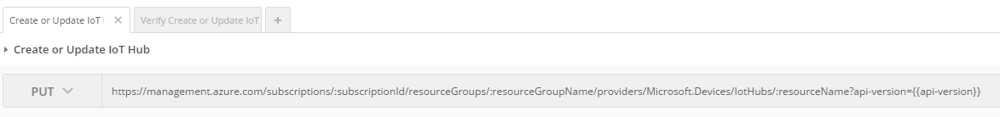
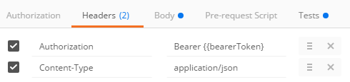
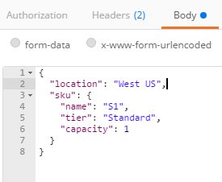
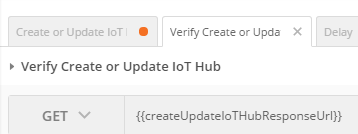
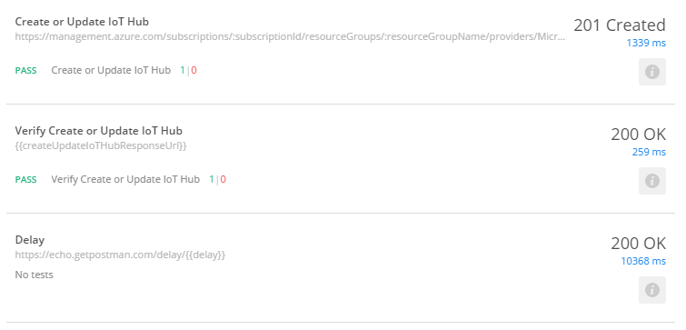
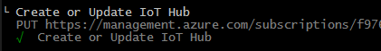
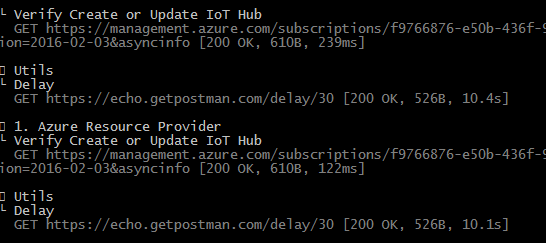
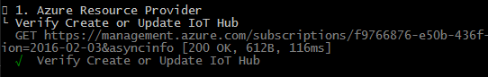

Some HTTP requests are long running and instead of asking users to wait for the long running operation to complete, they will return a “request status URI” that, when requested, will return a running/success/failure message.
For example, when you create a new Azure IoT Hub via this request:
|
It will return an Azure-AsyncOperation header with the following URI:
|
Which will have a payload like this when still running:
|
Or this when the IoT Hub has been created:
|
Here’s how to deal with this scenario in Postman.
The flow of requests will be executed in this order:
1. Execute the long running request.
2. Execute the check long running request status request.
3. If still running, then delay for 30 seconds and repeat #2. If not still running, then pass or fail the request based on status returned.
Create a “Delay” Request
This will create a Postman timeout that doesn’t chew up your CPU.
URI
|
“delay” is the number of minutes to delay before the next execution.
Tests
After the request is delayed it will execute this “test” which checks to see if there’s a “nextRequest” environment variable and then calls the “setNextRequest” method to execute it.
|
Create Long Running HTTP request
URI

|
Headers

|
See How to Use Azure Active Directory (AAD) Access Tokens in Postman for instructions on how to get a bearer token.
Body

|
Tests
This will first see if the request was successful and then put the Azure-AsyncOperation URI into an Environment Variable (to be executed later). It then sets the “nextRequest” environment variable that will be executed by
|
Setup Long Running Status Check Request
This request will call the “Azure-AsyncOperation” URI, check the status, call Delay, which will then execute the status check again.
URI
|

Headers
|
Tests
Add the following test to check the status and if still running will set the next request to ‘Delay’, which in turn will execute this request again.
|
Execute Requests
When you execute the tests in Collection Running, the output will look like the following:

When you execute in Newman, the requests will look like the following:


Until you get a success message:

Jon